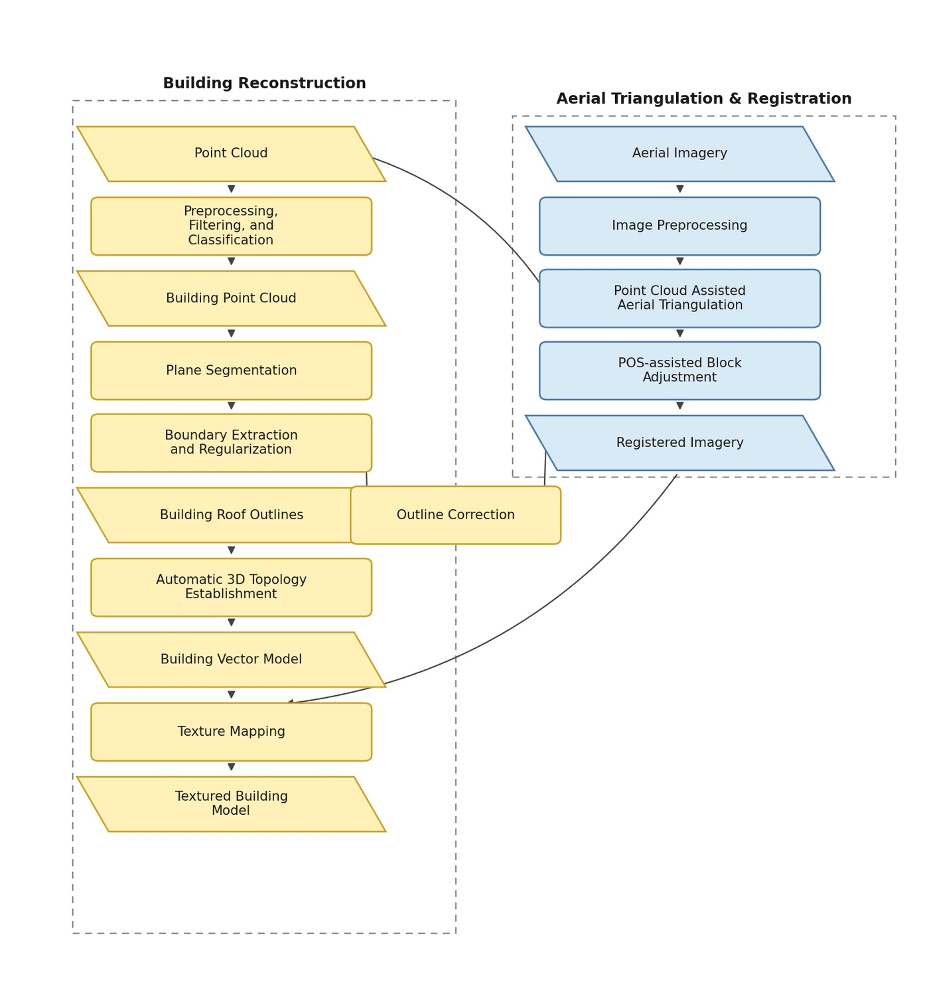
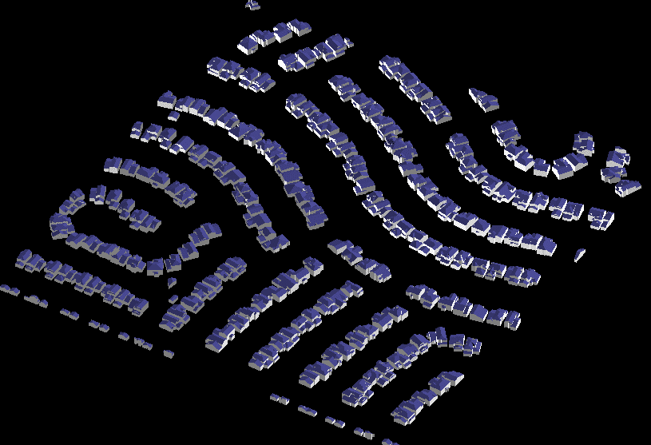
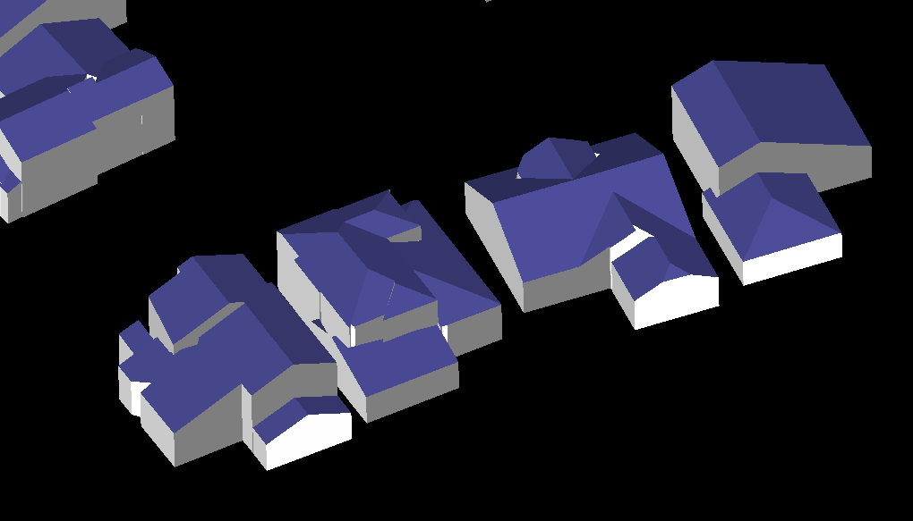

Automated building reconstruction from airborne LiDAR point clouds.
LiDAR Building 3D Reconstruction
An early-career system for reconstructing vectorized building models from airborne LiDAR, with roof plane segmentation, topology-driven roof modeling, and optional aerial-image refinement for textured outputs.
Problem
Airborne LiDAR surveys provide dense 3D observations over urban areas, but turning raw point clouds into usable building models is difficult. Roofs are often complex assemblies of intersecting planes, and simple height-based extrusion cannot recover realistic roof structure. The goal was to automate building reconstruction end to end: separate buildings from terrain, segment roof geometry, infer roof topology, and generate watertight vector models suitable for visualization and downstream GIS/CAD workflows.
Approach
- Filter and classify airborne LiDAR data to extract ground and building points, then segment individual building instances.
- Extract structural roof planes from each building point cloud and regularize plane boundaries.
- Define custom topological relationships between roof planes to describe complex roof assemblies, then reconstruct roof structure under these constraints.
- Combine roof geometry with ground height information to generate complete building vector models automatically.
- Optionally refine segmentation with registered aerial imagery and apply texture mapping to produce roof-textured building models.

My Contribution
I developed this building reconstruction system around 2012–2013, focusing on the geometric core that turns classified building point clouds into structured 3D models.
My main contributions included:
- Roof plane segmentation and boundary extraction from building point clouds
- Topology-driven roof modeling with custom planar relationship definitions for complex roof structures
- Automated roof reconstruction and building vector model generation
- Integration with aerial-image registration and texture mapping for textured outputs
Outcome
The system converts airborne LiDAR building observations into vectorized 3D building models with reconstructed roof structure, supporting both geometry-only outputs and textured models when aerial imagery is available.

